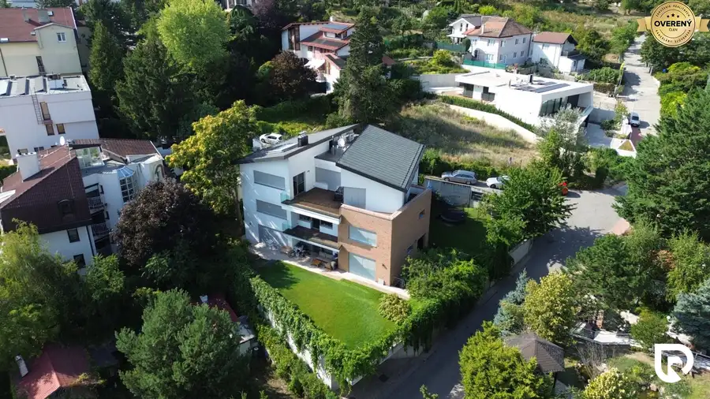
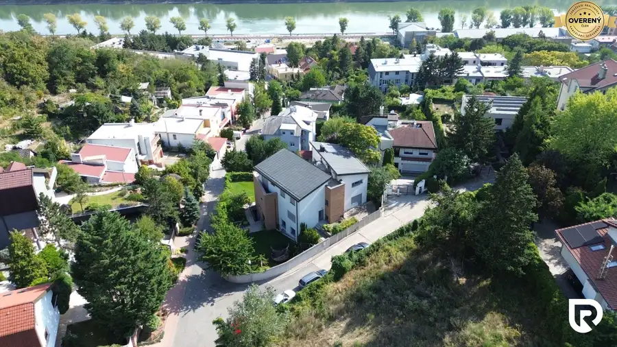

5-izbový byt 155m2 + terasa 12m2 | Staré Mesto
Staré Mesto, Bratislava


- Dispozícia5-izbový
- Plocha155 m²
- Poschodie2. z 3
- Stavpôvodný
- Vlastníctvoosobné
O nehnuteľnosti
RADOReality
Vám ponúka na prenájom nadštandardný 5-izbový byt situovaný v novostavbe mestskej vily v jednej z najprestížnejších rezidenčných lokalít Bratislavy – na Hradnom kopci v Starom Meste. Nehnuteľnosť spája veľkorysý priestor, súkromie, kvalitné materiály a výhľady smerom na Dunaj a Rakúsko. Byt sa nachádza na 1. nadzemnom podlaží s výťahom a ponúka úžitkovú plochu 155 m², ktorú dopĺňa 12 m² terasa a balkón. Súčasťou prenájmu sú zároveň dve parkovacie státia – jedno priamo v garáži a druhé vonkajšie státie na pozemku.
DISPOZÍCIA
Dominantou bytu je priestranná denná časť tvorená obývacou izbou s krbom a veľkou kuchyňou, ktorá vytvára prirodzené centrum celého bývania. Z obytnej časti je prístup na terasu s príjemným výhľadom. Nočná časť ponúka 3 samostatné izby, vďaka čomu je byt vhodný nielen pre rodinu, ale aj pre klienta, ktorý potrebuje samostatnú pracovňu či hosťovskú izbu. K dispozícii sú 2 kúpeľne vybavené vaňou a sprchovacím kútom, toaleta a tiež samostatná toaleta s umývadlom. Výhodou je aj samostatný vstup do bytu.
VYBAVENIE
Byt sa prenajíma čiastočne zariadený a pri jeho vybavení bol kladený dôraz na kvalitu a komfort. Kuchyňa disponuje žulovou pracovnou doskou a pracovným ostrovčekom. Súčasťou sú vstavané spotrebiče vrátane umývačky riadu, mikrovlnnej a elektrickej rúry, odsávača pár, indukčnej varnej dosky Siemens, chladničky na víno a veľkej americkej chladničky LG.
Komfort bývania ďalej zvyšuje klimatizácia vo všetkých miestnostiach, vonkajšie elektrické hliníkové žalúzie, centrálny vysávač, alarm a kamerový systém domu. Veľkoformátové hliníkové okná s izolačným trojsklom zabezpečujú dostatok prirodzeného svetla a zároveň dobré tepelnoizolačné vlastnosti. Samozrejmosťou sú bezpečnostné vstupné dvere a obyvatelia majú k dispozícii aj prístup do záhrady.
LOKALITA
Hradný kopec patrí medzi najvyhľadávanejšie a najprestížnejšie rezidenčné lokality Bratislavy. Byt sa nachádza v tichej slepej ulici, ktorá poskytuje vysokú mieru súkromia a zároveň veľmi dobrú dostupnosť do centra mesta. Historické centrum je vzdialené približne 1,9 km, zastávka MHD iba 300 metrov a k Dunaju je to približne 400 metrov. Na Kapucínsku sa dostanete jednu zastávku MHD, k Mostu SNP tri zastávky a pešo do centra približne za 25 minút. Výhodou je aj rýchle napojenie na diaľničný obchvat.
Táto nehnuteľnosť je ideálnou voľbou pre klienta, ktorý hľadá reprezentatívne a priestranné bývanie v pokojnom prostredí Starého Mesta, no zároveň nechce robiť kompromisy v dostupnosti centra.
CENA
Mesačné nájomné vrátane energií: 3.000€ / mesiac
V prípade záujmu o detailnejšie informácie alebo obhliadku nehnuteľnosti ma neváhajte kontaktovať:
Rastislav Horňák
RADO Reality Group
Tel.:
E-mail:
Uvedená cena je konečná, pokiaľ sa zmluvné strany nedohodnú inak.
Parametre
- Celková rozloha
- 167 m²
- Úžitková plocha
- 155 m²
- Poschodie
- 2/vyššie poschodie
- Počet poschodí
- 3
- Počet izieb
- 5
- Vlastníctvo
- osobné
- Stav
- pôvodný
- Status
- aktívne
- Odvoz odpadu
- áno - separovaný
- Internet
- optika
- Kúpeľňa
- áno
- Vykurovanie
- áno
- Terasa
- áno - 1
- Pivnica
- áno
- Garáž
- áno - 2 autá
- Výťah
- áno
- Parkovanie
- áno
- Postavené z
- tehla
- Zariadenie
- čiastočne
- Zateplený objekt
- áno
- Krb
- áno
- Klimatizácia
- áno
- Káblová televízia
- áno
- Energetický certifikát
- áno
- Orientácia
- južná
- Novostavba
- áno
- Dátum zverejnenia
- 2026-08-11
Kde to je
Mohlo by Vás zaujímať
 BytNové
244 900 €3-izbový byt 80m2 | I. Bukovčana - DNV
Devínska Nová Ves, Bratislava
3-izbový77 m²1. podlažie
BytNové
244 900 €3-izbový byt 80m2 | I. Bukovčana - DNV
Devínska Nová Ves, Bratislava
3-izbový77 m²1. podlažie
 Rodinné domyNové
721 400 €4-izbový dom 390m2 + pozemok 1000m2 | Limbach
Limbach
4-izbový390 m²
Rodinné domyNové
721 400 €4-izbový dom 390m2 + pozemok 1000m2 | Limbach
Limbach
4-izbový390 m²
 Rodinné domyNové
359 100 €4-izbový rodinný dom 108m2 + pozemok 471m2 | Senec
Senec
4-izbový108 m²
Rodinné domyNové
359 100 €4-izbový rodinný dom 108m2 + pozemok 471m2 | Senec
Senec
4-izbový108 m²